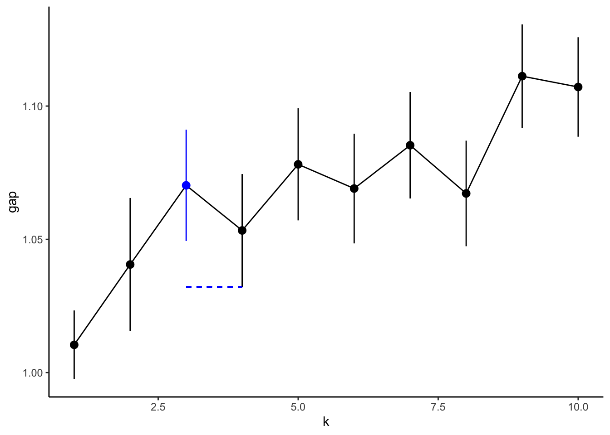
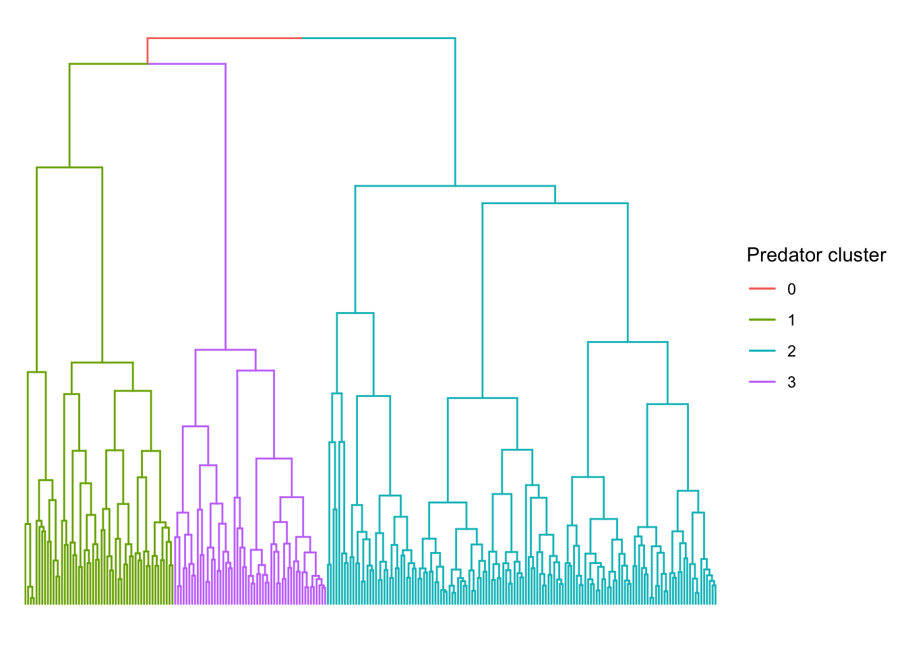

Dietrich et al. (2021) restricted cluster analysis to taxa observed at 5% or more of stations, which was necessary to avoid giving rare species too much leverage. Predators are far less diverse, so this analysis retains all species except uncertain IDs (e.g. UNSE = unknown seal). 22 species included in analysis.
We use the gap statistic (Tibshirani, Walther, and Hastie 2001) to choose the optimal number of clusters (\(k\)). The gap statistic (\(f\)) is a goodness of clustering measure. The authors recommended choosing \(k\) at the shoulder of the \(f \sim k\) curve. Heuristically, the shoulder is the smallest \(k\) such that \(f(k) \geq f(k+1) - s(k+1)\) where \(s\) is the standard error of \(f\). According to this rule, the predators are best described by three clusters.
Code
ktibs <-with(sightings_gap, k[is_optimum])tibs_thr <-with(sightings_gap, gap[ktibs +1] - SE.sim[ktibs +1])ggplot(sightings_gap, aes(x = k, y = gap)) +geom_line() +geom_pointrange(aes(ymin = gap - SE.sim, ymax = gap + SE.sim,color = is_optimum)) +geom_pointrange(aes(ymin = gap - SE.sim, ymax = gap + SE.sim),filter(sightings_gap, k ==3),color ="red") +geom_segment(x = ktibs, xend = ktibs +1, y = tibs_thr, yend = tibs_thr,color ="blue",linetype ="dashed") +scale_color_manual(values =c(`TRUE`="blue",`FALSE`="black")) +theme_classic() +theme(legend.position ="none")

Hierarchical clustering of stations by predator community. Note: 394 stations were included in the zooplankton clustering, but only 245 stations were used for predator clustering.
Code
g <-split(names(sightings_cut), sightings_cut)p <-ggtree(sightings_clust, hang =-1)pred_clust_mrca <-sapply(g, function(n) MRCA(p, n))p %>%groupClade(pred_clust_mrca, group_name ="Predator cluster") +aes(color =`Predator cluster`) +layout_dendrogram() +theme_dendrogram()

Indicator species
Which species best represent each cluster? Using Dufrene-Legendre indicator species analysis. Indicator values, \(d\), presented for each cluster for \(d\gt0.25\). \(d\) is the product of relative frequency (fraction of sites present within cluster) and relative abundance (fraction of abundance found within cluster).
Relative to cluster 3, cluster 2 was composed of more ice associated species. The strongest indicator for cluster 2 was the Antarctic fur seal, which was sighted at 98.6% of cluster 2 sites, for 87% of the species’ total abundance. Pagophilic predators such as crabeater seals, leopard seals, and Adélie penguins were also indicator species for this cluster. Another pagophilic predator, the minke whale, was too rare overall to be significant indicator species for any cluster, but was sighted most frequently in cluster 2 (12.2% of sites versus 5.2% and 4.4% of clusters 1 and 3, respectively) and 80.0% of its abundance was in cluster 2.
Cluster 3 describes a more open water guild. Southern fulmars and cape petrels were significant indicator species for this cluster. Blue petrels, an open water predator, were most frequently observed in cluster 3 (36.3% of sites, relative to 6.9% and 10.8% of sites in clusters 1 and 2) in greater numbers than elsewhere (66.0% of total abundance).
Snow petrels, Antarctic petrels, and southern giant petrels were significant indicator species for both clusters 2 and 3. These species were the most widespread predators overall, sighted at 59.1%, 53.0%, and 44.9% of stations. Snow petrels were also the most abundant predator in the survey, accounting for 34.1% of total individuals observed.
No species were identified as significant indicators for cluster 1. Species observed at >25% of cluster 1 sites include Adélie penguins, crabeater seals, and Antarctic fur seals, suggesting a pack ice community. In terms of relative abundance, 59.8% of Weddell seals, 43.6% of Adélie penguins, and 20.2% of crabeater seals were sighted in cluster 1. If this cluster represents the pack ice community, the lack of significant indicator species may be attributable to difficulty surveying the pack ice?
Cluster distribution
How frequent are the different clusters and where were they found? The open water community was observed most often, followed by the marginal ice zone then the pack ice communities. The relative frequency of the open water community was greatest in 2012, when survey effort in the Bransfield Strait was most limited, and least in 2016. Generally, the open water community occupied the offshore regions, but in 2014 and 2015 it moved onto the shelf into the triangle between Elephant, Joinville, and George Islands.
The marginal ice zone community occupied the shallower, western part of the Bransfield Strait, moving offshore of the Shetland Islands in 2014 and north of Elephant Island in 2016.
The pack ice community was most commonly observed in the south eastern part of the survey region, near Joinville Island. A particularly coherent group of sites in this community formed in 2013 between Joinville Island and the South Shetlands.
Code
stations_clust %>%mutate(Year =factor(Year)) %>% crosstable::crosstable("Year", by ="pred_clust", total ="col") %>% crosstable::as_flextable()
Only two environmental variables were significantly correlated with the NMDS axes: sampling year and ice coverage, with \(r^2\) values of 0.061 and 0.053, respectively. Compare this to the macrozooplankton analysis, where 8 environmental values were significantly correlated with the NMDS axes and \(r^2\) values were as high as 0.36 (chl a in the upper 100 m) and 0.703 (upper mixed layer salinity).
Median ice coverage increased from the open water cluster (median 33.0%) to the marginal ice (59.6%) and pack ice (70.6%) clusters. This supports the labels of “open water” and “marginal ice” for clusters 3 and 2, respectively. Also provides evidence for the “pack ice” cluster.
Predator/prey cluster associations were statistically significant overall (\(\chi = 53.6, p<0.001\)) as were 5 pairwise associations after applying Bonferroni correction. The marginal ice and pack ice predator communities were positively associated with macrozooplankton communities 3b (large krill, including E. superba) and 3a (an extremely diverse assemblage associated with cold, high salinity water), respectively. The open water predator community was positively associated with cluster 2b (Thysanoessa macrura) and negatively associated with 3a and 3b. Macrozooplankton cluster 1 (a ubiquitous cluster indicated by Salpa and Clione) was not significantly associated with any predator cluster. Neither was macrozooplankton cluster 2a (indicated by important prey species such as E. frigida, E. triacantha, myctophid larvae, and Themisto gaudichaudii), but it associated most often with the open water predator cluster.
Tibshirani, Robert, Guenther Walther, and Trevor Hastie. 2001. “Estimating the Number of Clusters in a Data Set via the Gap Statistic.”Journal of the Royal Statistical Society: Series B (Statistical Methodology) 63 (2): 411–23. https://doi.org/10.1111/1467-9868.00293.